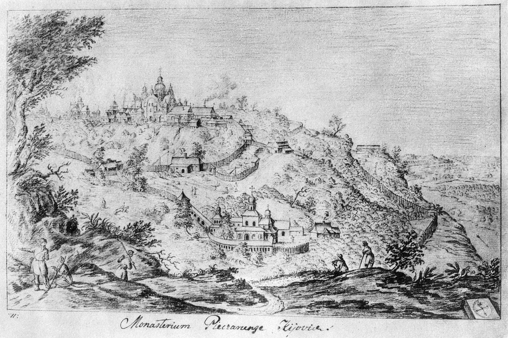

Києво-Печерська Лавра

Історія
До кінця ХІХ століття
Обитель засновано, неподалік древньої Варязької печери, в 1051 за князя Ярослава Володимировича, ченцем Антонієм, як печерний монастир. Один із перших монастирів Русі, що поклав початок руському чернецтву. Співзасновником монастиря вважається один із перших учнів Антонія — Феодосій. У 1058, з благословення преподобного Антонія, преподобний Варлаам побудував над печерою дерев'яну церкву на честь Успіння Пресвятої Богородиці.  У XI столітті монастир став центром розповсюдження і затвердження християнства у Київській Русі. У лаврі працювали відомі літописці Никон Великий і Нестор (автор «Повісті минулих літ»). У XII столітті отримав статус «лаври» — головного великого монастиря. У XIII столітті складено «Києво-Печерський патерик» — важливе джерело з історії Києва. У 1416 спалений ординцями під проводом Едигея під час нападу на Київ. Відбудована в 1470. У XVII столітті архимандритом монастиря був Петро Могила. 21 квітня 1718 згоріли «всі будівлі, церква велика, дзвони, ризниця». У XVIII столітті Лавра стала найбільшим церковним феодалом в Україні: їй належали 3 міста, 7 містечок, близько 200 сіл і хуторів, понад 70 000 кріпаків, 2 паперові фабрики, 11 цегляних і 6 скляних заводів, більше 160 винокурень і вітряків, близько 200 шинків, 2 кінних заводи. Києво-Печерській лаврі було підпорядковано багато дрібних монастирів і так звані пу́стині (зокрема Китаївська, Микільська та інші під Києвом) з їхніми угіддями і кріпаками в Україні, Росії, Білорусі. Відіграла важливу роль у розвитку давньоруської культури, була центром літописання. Тут перекладалися на церковнослов'янську мову і переписувалися твори іноземних авторів. У XIX ст., як і раніше, Лавра проводила значні будівельні та ремонтно-реставраційні роботи. У період реконструкції Печерської фортеці, в середині XIX ст., навколо Нижньої території Лаври споруджено кам'яний фортечний мур. Наприкінці ХІХ ст. за проєктом архітектора В. Ніколаєва побудовано Трапезну палату і церкву. Під керівництвом архітектора О. Щусєва були розписані інтер'єри церкви і Трапезної палати. Обитель виявляла турботу про здоров'я ченців та прочан. У 1849 на терені монастиря побудована Лікарня при Микільському Больницькому монастирі на два поверхи, а також лікарня для прочан та мандрівників, яка щороку обслуговувала понад 500 хворих. У 1873 в Києві при Церковно-Археологічному товаристві започатковано перший загальнодоступний музей міста — Церковно-Археологічний, унікальна колекція якого налічувала понад 30 000 експонатів. Метою його створення було визначено захист та зібрання церковних старожитностей, а також вивчення церковної історії. За своїми організаційними принципами музей був закладом цивільним, діяв на громадських засадах та існував на добровільні пожертви. Створення цього музею знайшло глибоке розуміння серед духівництва — від сільських пастирів до настоятелів монастирів та єпископату, багато з яких ревно сприяли поповненню колекції музею. У 1592—1688 монастир був ставропігією Вселенського патріархату Константинополя, із 1688 — Московського патріарха, із 1786 — Київського митрополита.
ХХ століття
Трагічні події після 1917 послужили поштовхом до тотального винищення православного духівництва і всього,
що було зв'язано з церквою. 25 січня 1918 у стінах лаври закатовано митрополита київського й галицького
Володимира, а в 1920 лавру закрито.
4 серпня 1929 більшовики завершили роботи з перетворення колишнього монастиря на Всеукраїнське музейне
містечко, головне призначення якого — бути центром антирелігійної пропаганди в УСРР. Перед Наркоматом
внутрішніх справ УСРР порушено клопотання про негайне виселення з території містечка осіб духовного
звання, котрі до цього часу в ньому проживали.
Під час Другої світової війни у 1941 радянські війська підірвали Свято-Успенський собор. За поширюваною
довгий час органами пропаганди повоєнною маскувальною «легендою», підрив було нібито здійснено
німецькою окупаційною владою під керівництвом рейхскомісара України Еріха Коха. Радянська пропаганда
обґрунтовувала «німецьку версію» нацистською ідеологією, за якою «підкорені народи не повинні були мати
символічних культових споруд». Проте пізніше, радянська пропаганда вже приписувала «подвиг» по знищенню
Успенського собору та по мінуванню та підриву центра Києва диверсійно-терористичній групі НКВС на чолі з
Іваном Кудрею.
Після вибуху храм був залишений у руїнах як свідчення злочинів нацистів. Не були здійснені плани
відтворити його в початкових середньовічних формах до святкування 1000-річчя хрещення Київської Русі.
Чернецьке життя і богослужіння в Києво-Печерській лаврі відновлено з 1988. 9 грудня 1995 Президент
України Леонід Кучма видав указ про відновлення Успенського собору. Храм відтворено поспіхом, практично
за два роки, без серйозної наукової підготовки, із використанням сучасних матеріалів. Перед
будівельниками стояла задача встигнути до 950-річчя лаври. Освячений 24 серпня 2000.
У червні 1988, у зв'язку зі святкуванням 1000-ліття хрещення Київської Русі і постановою Ради Міністрів
УРСР, новоствореній печерській чернечій громаді була передана територія Дальніх печер.
У 1990 лавру внесено до списку Всесвітньої спадщини ЮНЕСКО.
Першим настоятелем новоствореної обителі став митрополит київський і всієї України Філарет (Денисенко),
а намісником — архімандрит Іонафан (Єлецьких). З 1992 настоятель (священноархімандрит) лаври —
митрополит київський і всієї України Володимир (Сабодан), резиденція якого розташована на території
монастиря. З 1994 намісник лаври — архієпископ вишгородський Павло (Лебідь).
окупаційною владою під керівництвом рейхскомісара України Еріха Коха. Радянська пропаганда
обґрунтовувала «німецьку версію» нацистською ідеологією, за якою «підкорені народи не повинні були мати
символічних культових споруд». Проте пізніше, радянська пропаганда вже приписувала «подвиг» по знищенню
Успенського собору та по мінуванню та підриву центра Києва диверсійно-терористичній групі НКВС на чолі з
Іваном Кудрею.
Після вибуху храм був залишений у руїнах як свідчення злочинів нацистів. Не були здійснені плани
відтворити його в початкових середньовічних формах до святкування 1000-річчя хрещення Київської Русі.
Чернецьке життя і богослужіння в Києво-Печерській лаврі відновлено з 1988. 9 грудня 1995 Президент
України Леонід Кучма видав указ про відновлення Успенського собору. Храм відтворено поспіхом, практично
за два роки, без серйозної наукової підготовки, із використанням сучасних матеріалів. Перед
будівельниками стояла задача встигнути до 950-річчя лаври. Освячений 24 серпня 2000.
У червні 1988, у зв'язку зі святкуванням 1000-ліття хрещення Київської Русі і постановою Ради Міністрів
УРСР, новоствореній печерській чернечій громаді була передана територія Дальніх печер.
У 1990 лавру внесено до списку Всесвітньої спадщини ЮНЕСКО.
Першим настоятелем новоствореної обителі став митрополит київський і всієї України Філарет (Денисенко),
а намісником — архімандрит Іонафан (Єлецьких). З 1992 настоятель (священноархімандрит) лаври —
митрополит київський і всієї України Володимир (Сабодан), резиденція якого розташована на території
монастиря. З 1994 намісник лаври — архієпископ вишгородський Павло (Лебідь).